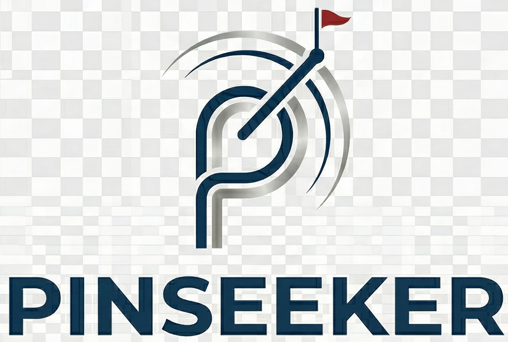

Uses your phone's motion sensors to measure green slope.Allow motion access when prompted.
Rotate phone so the bottom (home button) is on your right.
Place phone flat on a table and press Calibrate.